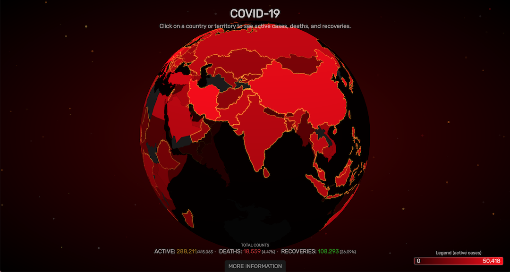
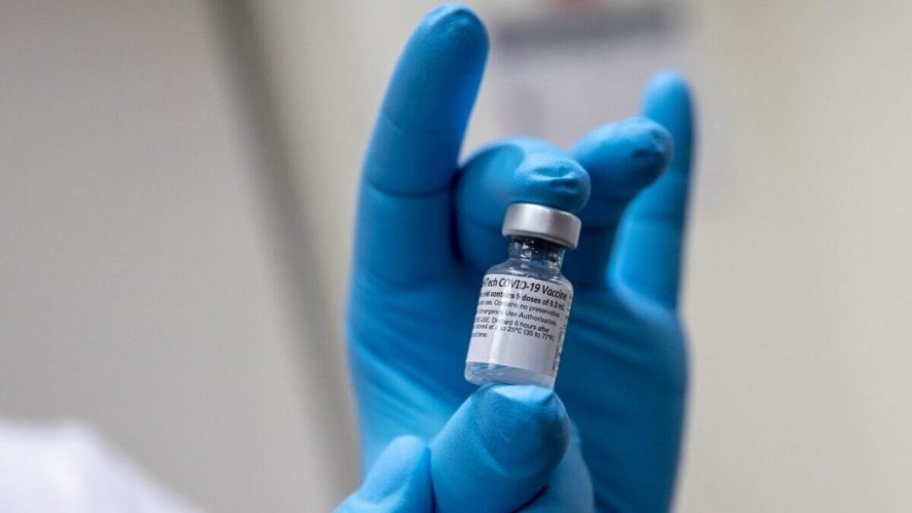
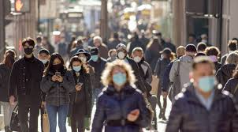
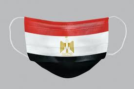

البداية
اجتاح فيروس كورونا المستجد (كوفيد-19) العالم في بداية عام 2020 مُسبباً جائحة أثرت على حياة الملايين في جميع أنحاء العالم
بدأ الفيروس بالانتشار في مصر في أوائل عام 2020، مما أدى إلى اتخاذ الحكومة العديد من الإجراءات الوقائي





ما هو فيروس 2020
في نهاية عام 2019، ظهر فيروس جديد في مدينة ووهان الصينية، وهو فيروس كورونا المستجد
الذي تسبب في مرض تنفسي حاد. مع مرور الوقت، بدأ الفيروس ينتشر بشكل سريع إلى معظم دول العالم
مما جعل منظمة الصحة العالمية تعلن عن جائحة عالمية في مارس 2020
ما هي اعراضه؟
الحمى: كان ارتفاع درجة الحرارة أحد أول الأعراض التي يشعر بها المصابون.
السعال الجاف: سعال مستمر دون إفرازات.
ضيق التنفس: يعاني المرضى في الحالات الشديدة من صعوبة في التنفس.
الإرهاق: شعور مستمر بالتعب الشديد.
آلام في الجسم: يشعر العديد من المرضى بآلام في العضلات والمفاصل.
في البداية، كانت أعراض المرض خفيفة عند بعض الأشخاص، ولكن في حالات أخرى، كانت الأعراض تتفاقم
بسرعة وتسبب مشاكل في التنفس، مما يستدعي تدخلًا طبيً
طرق الوقاية منه؟
ارتداء الكمامات للحماية من انتقال الفيروس.
غسل اليدين بالماء والصابون.
التباعد الاجتماعي، وذلك بتجنب الأماكن المزدحمة.
تنظيف الأسطح التي نلمسها بشكل مستمر.
تأثيره على مصر
في بداية عام 2020، بدأت مصر تسجل حالات إصابة بفيروس كورونا. كانت أول حالة في فبراير 2020، وكان الفيروس ينتشر بسرعة، مما دفع الحكومة المصرية إلى اتخاذ العديد من الإجراءات لمكافحة الجائحة.
الأحصائيات في مصر
بحلول منتصف 2020، كانت مصر قد سجلت عدة آلاف من الإصابات بفيروس كورونا
وبدأت الحالات تتزايد تدريجيًا، مما دفع الحكومة إلى فرض إجراءات احترازية صارمة. كانت هناك تحديات كبيرة
في السيطرة على انتشار الفيروس، ولكن الحكومة اتخذت خطوات سريعة للتعامل مع الأزمة .
تأثيره على اقتصاد مصر
قطاع السياحة: تأثرت السياحة بشكل كبير، حيث أغلقت الفنادق والمعالم السياحية، وتوقفت الرحلات
الدولية. كانت هذه واحدة من أكثر القطاعات تضررًا، حيث فقد العديد من العاملين وظائفهم.
القطاع الصناعي: تأثرت بعض المصانع بشكل مؤقت بسبب الإجراءات التي فرضتها الحكومة للحد من انتشار الفيروس. كما توقفت بعض خطوط الإنتاج لفترة قصيرة.
العمالة غير المنتظمة: كان العديد من العمال في مصر يعملون في وظائف غير ثابتة مثل الباعة الجائلين أو العمال اليوميين، وقد تأثروا بشدة بسبب توقف العمل في العديد من القطاعات.
دور الحكومة المصرية
حملات توعية: قامت الحكومة بتنظيم حملات إعلامية على مختلف وسائل الإعلام لتوعية المواطنين حول كيفية الوقاية من الفيروس. تم التركيز على أهمية غسل اليدين، وارتداء الكمامات، والابتعاد عن الأماكن المزدحمة.
اجراءات التباعد الاجتماعي: في مارس 2020، فرضت الحكومة إغلاقًا جزئيًا في العديد من الأماكن العامة، مثل المطاعم والمقاهي، وأغلقت المدارس والجامعات لفترة طويلة. كما أُلغيت العديد من الفعاليات العامة.
حملة التطعيم: في عام 2021، بدأت مصر في حملة تطعيم كبيرة ضد فيروس كورونا. تم توفير اللقاحات للمواطنين بشكل مجاني، وأُقيمت مراكز تطعيم في جميع أنحاء البلاد لتسريع توزيع اللقاحات. كان لقاح "سينوفارم" الصيني ولقاح "أسترازينيكا" البريطاني من أول اللقاحات التي تم استخدامها في مصر
الدعم المالي: قدمت الحكومة العديد من الدعم المالي للمواطنين الذين تأثروا من جراء الجائحة. تم تخصيص مساعدات مالية للأسر ذات الدخل المحدود، وخاصة العمال غير المنتظمين الذين تأثروا من الإغلاقات.
التعاون مع المجتمع الدولي
تلقت مصر مساعدات من العديد من الدول والمنظمات الدولية، بما في ذلك اللقاحات والمعدات الطبية. تعاونت مصر مع منظمة الصحة العالمية وبعض الدول الكبرى للحصول على إمدادات طبية ضرورية.
كيف انتهت الجائحة؟
ومع بداية حملات التطعيم الواسعة النطاق، بدأت حالات الإصابة بفيروس كورونا في التراجع تدريجيًا في مصر.
بالرغم من وجود بعض المتحورات الجديدة للفيروس في 2022، إلا أن الحكومة كانت قد اتخذت الإجراءات المناسبة للحد من انتشار الفيروس.
وبدأت الحياة تعود تدريجيًا إلى طبيعتها، مع استمرار جهود التطعيم والوعي الصحي في الحفاظ على سلامة المواطنين.
الحياة بعد الجائحة
عادت الحياة إلى طبيعتها في معظم أنحاء مصر، حيث استأنفت المدارس والجامعات أعمالها، وعادت الأنشطة الاقتصادية إلى مستويات ما قبل الجائحة.
ومع ذلك، لا تزال الحكومة تواصل متابعة الوضع الصحي وتدعو المواطنين للاستمرار في اتباع بعض التدابير الوقائية، مثل ارتداء الكمامات في الأماكن المزدحمة.
كما أن هناك استثمارًا كبيرًا في النظام الصحي المصري، خاصة في البنية التحتية الصحية والمستشفيات، لتعزيز القدرة على مواجهة أي أزمات صحية في المستقبل. بفضل التقدم الكبير في البحث العلمي والعلاج،
أصبح المجتمع في مصر أكثر استعدادًا لأي تحديات صحية قد تظهر في المستقبل.
الوضع في عام2024
بحلول عام 2024، أصبح فيروس كورونا في مصر تحت السيطرة إلى حد كبير. لم تعد هناك حالات إصابة جماعية كما كان الحال في ذروة الجائحة.
أغلب السكان تم تطعيمهم ضد الفيروس، مما ساعد في تقليل عدد الحالات الشديدة.
وعلى الرغم من وجود بعض الحالات النادرة من الإصابات في البلاد، فإن الفيروس لم يعد يشكل تهديدًا صحيًا كبيرًا كما كان في السنوات السابقة.
النهاية